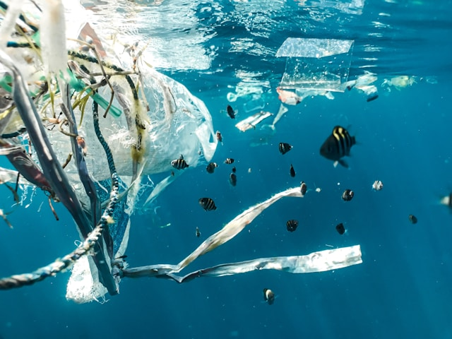
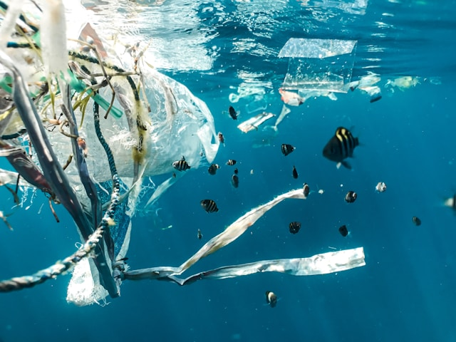

Die Forschung an der Harrison Bay
Die Harrison Bay zeichnet sich durch ihre exzellente Forschung in einer Vielzahl von Bereichen aus. Unsere Forschungsschwerpunkte spiegeln die wichtigsten Herausforderungen und Chancen unserer Zeit wider und zielen darauf ab, wissenschaftliche Erkenntnisse zu gewinnen, die für Gesellschaft, Wirtschaft und Umwelt von Nutzen sind.
- Entwicklung neuer KI-Algorithmen, Anwendungen von KI in verschiedenen Bereichen (z. B. Medizin, Robotik, autonome Fahrzeuge), ethische Implikationen von KI.
- Erforschung der Ursachen und Auswirkungen des Klimawandels, Entwicklung von Lösungen zur Minderung des Klimawandels und Anpassung an seine Folgen, Förderung nachhaltiger Energiequellen und Lebensweisen.
- Entwicklung neuer Energiequellen (z. B. erneuerbare Energien, Kernfusion), Verbesserung der Energiespeicherung und -verteilung, Steigerung der Energieeffizienz.
- Erforschung der Grundlagen der Quantenphysik, Entwicklung von Quantencomputern und anderen quantenbasierten Technologien.
- Untersuchung der Auswirkungen der Digitalisierung auf Gesellschaft, Wirtschaft und Politik, Entwicklung neuer Informationstechnologien (z. B. 5G, Cloud Computing, Internet der Dinge), Cybersicherheit.
Künstliche Intelligenz (KI) und maschinelles Lernen (ML):
Klimawandel und Nachhaltigkeit:
Energieforschung:
Quantenphysik und Quanteninformatik:
Digitalisierung und Informationstechnologie:


Unsere Forschungsschwerpunkte:
- Erklärung und Interpretierbarkeit von KI-Systemen: Entwicklung von Methoden, um die Funktionsweise komplexer KI-Systeme zu verstehen und zu erklären, um Vertrauen und Akzeptanz zu fördern. KI für gesellschaftliche Herausforderungen: Anwendung von KI-Lösungen zur Bewältigung gesellschaftlicher Herausforderungen in Bereichen wie Bildung, Gesundheit, Umwelt und Verkehr.
Künstliche Intelligenz (KI)
Energieforschung:
- Dekarbonisierung der Energiesysteme: Entwicklung von Technologien und Strategien zur Reduzierung von Treibhausgasemissionen und zum Übergang zu einer kohlenstoffarmen Wirtschaft. Anpassung an den Klimawandel: Erforschung der Auswirkungen des Klimawandels auf verschiedene Systeme (z. B. Wasserressourcen, Landwirtschaft, Ökosysteme) und Entwicklung von Anpassungsstrategien.
Klimawandel und Nachhaltigkeit:
- Quantencomputerhardware: Entwicklung von skalierbaren und zuverlässigen Quantencomputern, die für praktische Anwendungen eingesetzt werden können. Quantenalgorithmen und -anwendungen: Erforschung neuer Quantenalgorithmen und deren Anwendung in Bereichen wie Kryptographie, Materialwissenschaft und Finanzmodellierung
Quantenphysik und Quanteninformatik:
- Cybersicherheit und Datenschutz: Entwicklung von Technologien und Methoden zum Schutz von Informationssystemen und personenbezogenen Daten vor Cyberangriffen und Datenschutzverletzungen. Mensch-Maschine-Interaktion: Gestaltung intuitiver und benutzerfreundlicher Schnittstellen, die eine effektive und effiziente Interaktion zwischen Menschen und digitalen Systemen ermöglichen.
Digitalisierung und Informationstechnologie:
 
